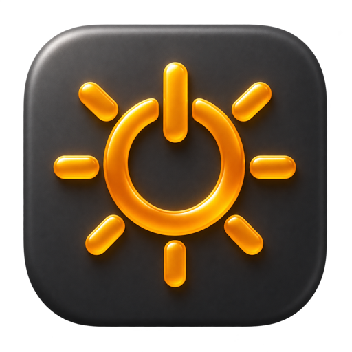

Power connected.
Work uninterrupted.
Flip one switch to prevent idle sleep while your Mac is on external power. Keep the display awake too, if you need it.
A little utility for your Mac
The render. The download. The idea that keeps going.
Keep your Mac awake while it’s plugged in, then let it rest when you unplug.
Developer ID signed & Apple notarized

Never Sleep
Keeping your Mac awake
Power adapter connected
Resumes when you plug back in. Closing the lid or choosing Sleep still works.
An interactive illustration. Your Mac’s settings stay unchanged.
One less thing to think about
Your Mac already knows when to save energy.
Never Sleep knows when to give you more time.
Flip one switch to prevent idle sleep while your Mac is on external power. Keep the display awake too, if you need it.
Protection pauses when you disconnect power. Plug back in and it resumes automatically. No switching modes by hand.
Never Sleep keeps working from the menu bar. Your settings are remembered, so everything feels familiar next time.
Automatic update checks and a native Sparkle updater keep new releases within reach. You can check from the menu bar, too.
Built with Rune, AppKit, and macOS power management. No helper daemon or permanent changes to your power settings.
No sign-up, subscription, or analytics. Your preferences stay on your Mac. The source is open for anyone to explore.
A few good questions
No. Never Sleep prevents idle sleep only while macOS reports external power. Protection pauses on battery and resumes when you plug back in.
Closing the lid, choosing Sleep, and emergency system sleep still follow normal macOS behavior. Never Sleep is designed to prevent automatic idle sleep, and it doesn’t disable screen locking.
The app needs to be running, but its window can stay closed. The menu bar icon gives you quick access to your settings. Quitting releases all sleep protection. Launch at login is not currently registered automatically.
The download is built for Apple silicon Macs running macOS 14 or later. Liquid Glass is available on macOS 26 and later, with native material on earlier versions. Reduce Transparency is respected.
Yes. Never Sleep is free and open source under the MIT license. Read the code, report an issue, or help make it better on GitHub.
Keep a good thing going